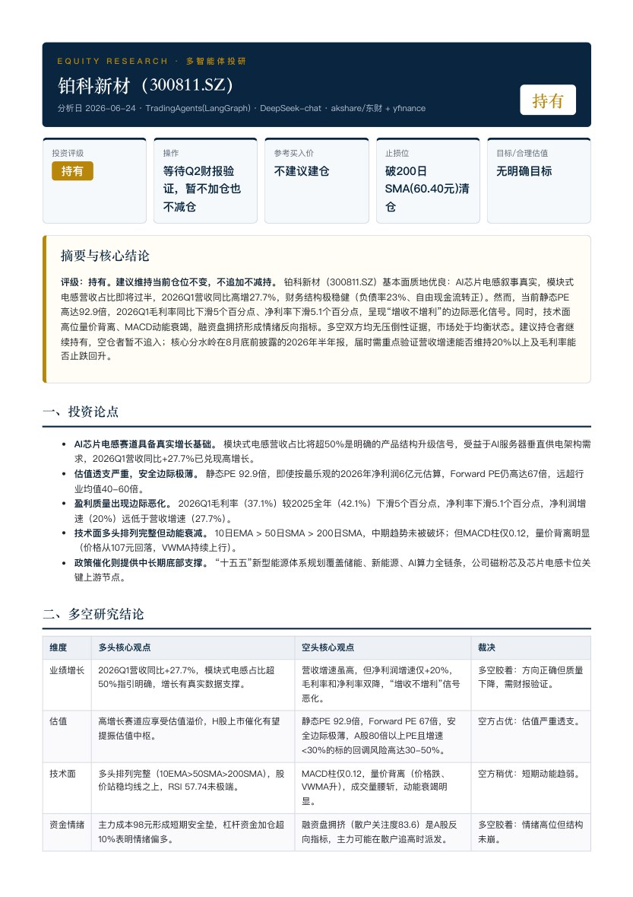

OPEN-SOURCE EXTENSION · SUMMER 2026
From multi-agent debate to a readable research report
An A-share research extension of TradingAgents, connecting local market data, policy analysis, and report generation.
Research workflow
A report needs more than a collection of agent replies
I wanted a research workflow that could gather A-share information, inspect competing interpretations, and produce one readable report. The work began with TradingAgents, which already provides analyst roles, bull/bear debate, and risk review.
I implemented the A-share data adapters and custom policy and report-writer nodes, integrating them into the existing LangGraph state graph.
DECISIONS
Extension design
Adapt the data layer
I added A-share adapters for market information, company financials, news, and policy context. Retry handling uses exponential backoff when a request fails.
Give policy analysis its own role
I added a policy-analysis node and routed its output into the shared research state. The graph keeps that contribution separate from other analyst reports before the existing debate workflow.
Write a report after the debate
I wired the report-writer node after the portfolio decision. It consumes analyst reports, debate history, and the decision from shared state, then emits a narrative and structured metadata. The PDF renderer reads that metadata for summary cards.
IMPLEMENTATION
Data to report
The graph extends the open-source TradingAgents framework. The debate and risk-review architecture comes from that upstream project; my additions connect A-share data and policy analysis to the reporting workflow.
Separating synthesis from rendering allows the same report content to feed a narrative document and structured summary cards. The metadata remains model-generated and still needs validation against the source material.
Delivered artifacts
Source code and a generated report
The public repository contains the extension and sample reports. The linked four-page sample, generated in June 2026, demonstrates the complete report format in Chinese. It is an output artifact of the software, not a measurement of investment performance.
Open the four-page generated sample 
Next validation
Test source-to-claim traceability, stale or missing inputs, and agreement between the narrative and summary fields. Compare the synthesized report against direct concatenation using a fixed review rubric.